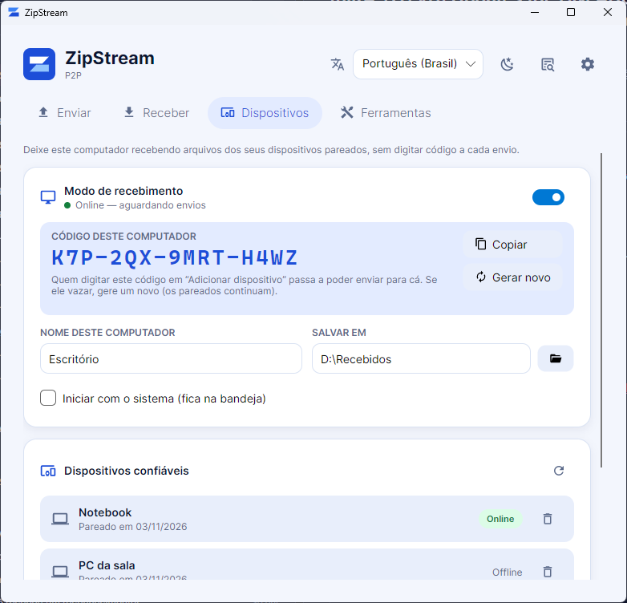

Arquivos grandes, direto para o outro computador.
Escolha um arquivo ou pasta, passe um código de 6 letras e pronto. Sem nuvem, sem cadastro, com criptografia de ponta a ponta. Se a conexão cair, o ZipStream continua de onde parou.
Seus arquivos nunca passam por um servidor de armazenamento.
4,2 GB
Três passos, nenhum cadastro
Quem envia e quem recebe usam o mesmo app. O código serve só para os dois computadores se encontrarem.
Escolha o que enviar
Arraste um arquivo ou pasta para o app, use os botões, ou clique com o botão direito no arquivo → Enviar com ZipStream.
Passe o código
O app mostra um código de 6 caracteres. Mande para quem vai receber, que digita o código na aba Receber e escolhe onde salvar.
Confira e pronto
Os dois veem o mesmo código de segurança. Se bater, ninguém está no meio. O arquivo chega compactado, verificado e já extraído.
Um computador que só recebe. Sem código a cada envio.
Deixe o computador do escritório (ou de casa) no modo de recebimento. Pareie seus outros computadores uma vez e, depois, é só escolher o arquivo e o destino.
- Ligue o modo de recebimento
Na aba Dispositivos. Com Iniciar com o sistema, ele já fica na bandeja quando o computador liga.
- Pareie uma vez
No outro computador, Adicionar dispositivo com o código fixo deste (
K7P-2QX-9MRT-H4WZ). O código nunca passa pelo servidor; se vazar, gere outro. - Envie direto
Na aba Enviar, escolha o computador pareado. Ele recebe sozinho e extrai na pasta escolhida. Só dispositivos confiáveis conseguem enviar.

Feito para arquivos que não cabem no e-mail
Vídeos, backups, pastas de projeto: o ZipStream compacta em streaming e envia em blocos, sem carregar tudo na memória.
Continua de onde parou
Caiu a conexão? Reconecta sozinho. Fechou o app? Abra de novo e clique em Retomar: o que já chegou é aproveitado.
Criptografia ponta a ponta
Chave combinada entre os dois computadores (ECDH) e AES-256-GCM em cada bloco. O servidor nunca vê o conteúdo.
Direto entre os computadores
Conexão P2P via WebRTC, com controle de fluxo para não sobrecarregar a rede nem a memória.
Compressão zstd
Arquivos e pastas inteiras compactados em blocos, cada um com verificação SHA-256 de integridade.
Você escolhe onde salvar
A pasta de destino fica lembrada. Nada é sobrescrito: se já existir, o novo vira nome (1).
Atualiza sozinho
O app avisa quando sai versão nova. No Windows, baixa, confere a integridade (SHA-256) e instala em um clique, reabrindo no fim.
O servidor só apresenta os dois
Um servidor de sinalização ajuda os computadores a se encontrarem. Depois disso, os dados vão direto de um para o outro.
-
Nada fica armazenado
O arquivo sai do seu computador e chega no outro. Nenhuma cópia em nuvem.
-
Código de segurança
Os dois lados veem o mesmo código de 6 dígitos derivado da chave. Se for diferente, alguém está no meio: cancele.
-
Um código, dois computadores
Cada código aceita só dois dispositivos. Um terceiro não consegue entrar na transferência.
Baixe para o seu sistema
Gratuito. Quem recebe precisa do app também. Depois de instalado, o próprio app avisa e instala as novas versões.
Windows Seu sistema
Windows 10 e 11 (64 bits). O instalador (ZipStream-Setup, sem administrador) está na última release e já oferece o menu “Enviar com ZipStream”. Versão portátil:
Todas as versões e notas de lançamento: página de releases.
Perguntas frequentes
Existe limite de tamanho?
Não há limite fixo. O envio é feito em blocos e com retomada, então arquivos de vários GB funcionam. Quem envia precisa de espaço livre para a versão compactada, que fica em cache até a transferência terminar.
E se a internet cair no meio?
O app tenta reconectar sozinho e continua do último bloco confirmado. Se você fechar o app, a transferência aparece em “interrompidas”: os dois lados clicam em Retomar e ela segue de onde parou.
Funciona entre redes diferentes, pela internet?
Na mesma rede funciona direto: um dos computadores liga o servidor local em Configurações. Pela internet, hoje é preciso apontar os dois apps para um servidor de sinalização acessível e, em redes mais restritas, um servidor TURN. O repositório traz um docker-compose pronto para isso.
Preciso criar conta?
Não. O código de envio é tudo o que os dois lados precisam. No modo de recebimento, o pareamento é entre os próprios computadores, também sem conta.
Posso deixar um computador recebendo sozinho?
Sim: ligue o modo de recebimento na aba Dispositivos e pareie seus outros computadores uma vez, com o código fixo dele. Depois, os envios chegam sem ninguém na frente da tela. Só dispositivos pareados conseguem enviar; se o código vazar, gere outro (os já pareados continuam).
Como atualizo o app?
O app procura versões novas uma vez por dia e mostra Atualização disponível no topo. No Windows, Baixar e instalar faz tudo e reabre o app; no Linux e no macOS, o botão leva à página de download.
O que é o código de segurança?
Um número de 6 dígitos calculado a partir da chave de criptografia combinada entre os dois computadores. Se aparecer o mesmo número nas duas telas, a conexão é mesmo entre vocês dois.
Deu erro. Como descubro o motivo?
A tela mostra uma explicação e o detalhe técnico. O botão Ver log abre o registro completo de cada etapa, que pode ser copiado ou exportado em .txt.